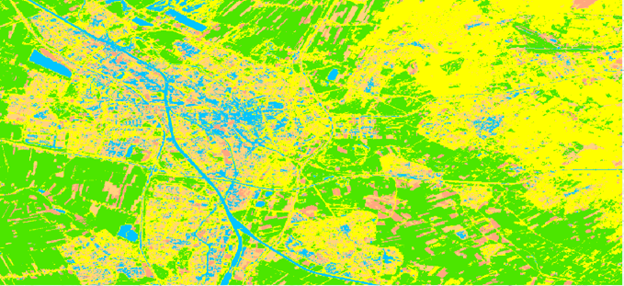
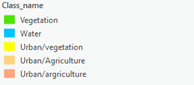
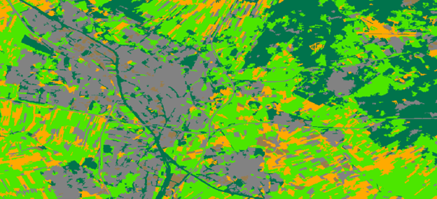
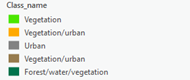
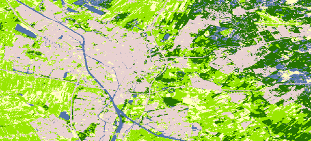
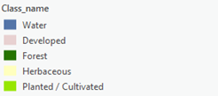
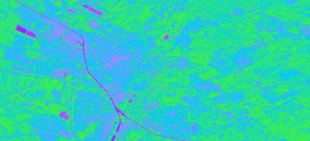
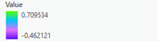

Land Use Classification
Land Use in Utrecht
A land use classification provides information on land cover in an area of interest. A land use classification analysis was conducted for a region in Utrecht, including an unsupervised pixel based and object based classification, and a supervised pixel based classification.
Unsupervised classification does not require training, whereas supervised classification requires manual input. Unsupervised classification offers the advantage that it is quick in use and create classes without manual training needed for supervised classification. However, this unsupervised classification might result in inaccurate classification and limited control. Meanwhile, supervised classification allows to choose classes and increase accuracy, which can be a time-consuming process. Pixel based classification uses spectral groups to classify land use, whereas object based classification also uses shape for classification.
Unsupervised Pixel Based Classification
 Unsupervised Object Based Classification
 Supervised Pixel Based Classification
 Normalized Difference Vegetation Index
 Methods and Observations
Satellite imagery of a region of Utrecht around the city center and Science Park from Google Earth Enginge was used. Both unsupervised and supervised land use classifications were conducted in ArcGIS Pro. The color scheme was chosen to reflect the true colors of the area, while ensuring sufficient contrast between different land use types.
Both the unsupervised pixel and object based classifications shows some inaccuracy in distinguishing between different land use types. In contrast, the supervised pixel based classification offers more accuracy.